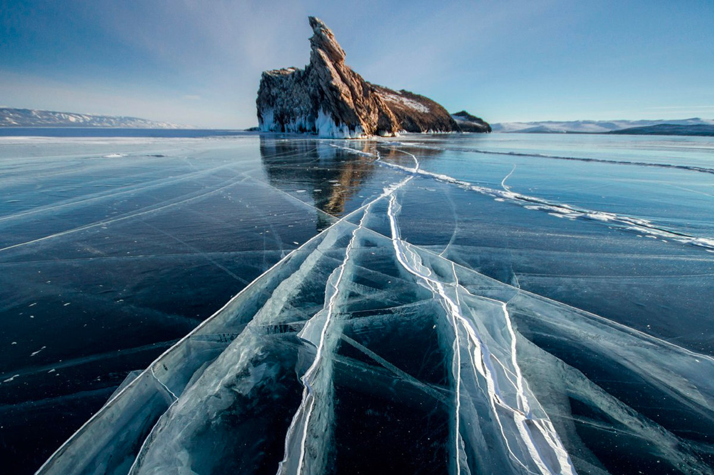

Байкал
Вы хотите съездить в путешествие на Байкал? Вам стоит посетить эти места!
Если вы едете летом, то обратите внимание в этих направлениях:
- Остров Ольхон
- Бухта Песчаная
- Бухты Мухорского залива

Если планируете поездку зимой, то советую побывать в этих местах:
- Остров Ольхон (да, он прекрасен в любое время года)
- Большое Голоустное
- Листвянка
